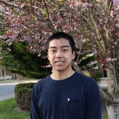

Hi, I'm Allen.
I'm a software engineer. From August 2022 to September 2026, I worked at Microsoft on customer-service software in Dynamics 365.
Most of that time was spent on Conversation Control, the interface service representatives use to manage live customer interactions. I worked on consult and transfer features, primarily in React and TypeScript, and took on more of the design, testing, rollout, and production support over time.
Later, I moved to Intent Assist, where I worked across the stack on AI-assisted customer-service workflows and built browser automation with Playwright MCP.
Background
My academic focus was Human Centered Design & Engineering, with a Human-Computer Interaction degree option and a minor in Informatics. That background informs how I think about interfaces and the people using them.
Before Microsoft, I also built a web application for Columbia Basin Research at the University of Washington.
More about my work
My resume covers my experience and skills. I've also written up a few projects, including Direct Transfer, Consult to Queue, and regression-test automation.
You can find me on LinkedIn or see my public code on GitHub.